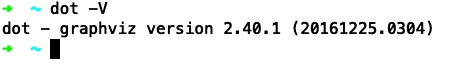
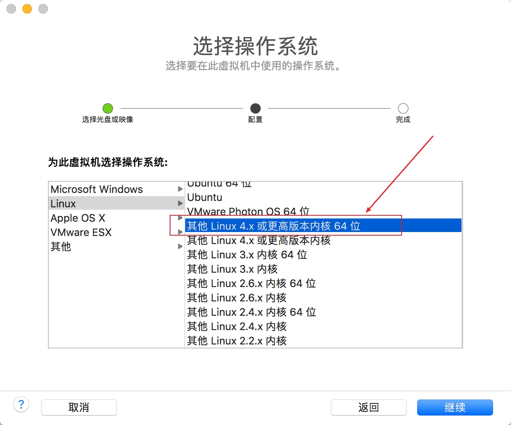

3分钟做5道leetcode题上手leetcode刷题之路
在官网注册后，点击题库页面就可以看到所有可以刷的题目了

可以按照难度进行筛选、建议从简单难度的题上手
两数之和: https://leetcode-cn.com/problems/two-sum/
问题描述

三分钟上手数据结构作图工具graphviz
graphviz数据结构作图工具应用比较广泛了，很多数据结构都可以使用gv画出来，比如常见的c语言的结构体、指针、链表等。也可以用来画流程图等常规图示，好用。
安装graphviz
mac os系统可以通过brew进行安装
brew install graphviz
然后就可以使用dot命令行工具了，这个工具就是用来生成图片的

dot语言
graphviz从dot语言生成图形，这个dot语言的语法十分简单，没有复杂的分支判断语句，官方文档参考：https://graphviz.gitlab.io/_pages/doc/info/lang.html
声明一个图形
比如4.gv, 包含一个"hello"的图形
digraph {
hello
}
然后执行dot 4.gv -Tpng -o 4.png && open 4.png生成图片，效果如下
基础数据结构-用链表实现队列和栈
链表在memcached、redis中作为核心数据结构出现。相比数组，链表能动态增减容量，就比数组要灵活，并且hash表结构一般都使用链表进行数据存储
完整案例代码已上传github: https://github.com/neatlife-learn/mydatastructure
队列
元素结构
对应代码如下
typedef struct _element {
struct _element *previous;
struct _element *next;
void *value;
} element;
队列结构
一个队列中包含多个元素，为了能够方便的得到这个队列头和尾，以及队列里的元素个数，使用这个queue结构来存放这些信息
memcached内存分配策略源码分析
本文基于memcached 1.2.0写成
memcached的内存分配器slab.c不过300行代码，还是比较容易上手分析的。
内存模型如下：
一个slabclass_t管理了多个slab，每个slab被称为内存页，每个slab管理多个item的内存空间
核心函数
| 函数名 | 作用 |
|---|---|
| slabs_init | 初始化slabclass_t结构体数组 |
| slabs_clsid | 通过内存大小从slabclass_t数组中找到最小能满足的结构体 |
| slabs_preallocate | 给每个slabclass_t先分配一个slab(页)的内存(1mb) |
| slabs_newslab | 给指定的slabclass分配一个新的slab存放到slab_list上，同时slabs、end_page_ptr、end_page_free发生相应变化 |
| grow_slab_list | 动态增加slab_list数组的大小 |
| slabs_alloc | 从内存分配器中取出一个空的item内存来使用 |
| slabs_free | 将item所在的内存指针重新标记成可使用，相当于删除了item |
| slabs_stats | 从slabclass_t结构体上获取内存分配器的使用情况 |
三分钟上手禅道项目任务管理系统
公司采用了这个禅道项目任务管理系统，是有必要了解学习的
文档参考：https://www.zentao.net/book/zentaopmshelp/40.html
github项目地址：https://github.com/easysoft/zentaopms
获取可用的禅道实例
可以使用docker一键启动禅道系统，参考：https://github.com/idoop/zentao
git clone https://github.com/idoop/zentao.git
cd zentao
docker-compose pull
docker-compose up -d
docker-compose ps
操作效果如下
可以看到web服务已经在80端口启动了，访问ip:80使用默认用户名密码 root 123456就可以登录了
三分钟上手linux系统开发
linux系统编程，主要使用c语言，c++是c的超集，也是可以的
完整项目代码已上传github：https://github.com/neatlife/my-tlpi-book
获取可用环境
可以使用虚拟机安装一个linux系统进行linux系统开发，虽然mac os和linux非常相似，但是和linux还是有很多小区别的，装虚拟机是最省事的
这里使用elementary os，下载地址参考：https://elementary.io/zh_CN/
安装时，选linux 4.x以上的内核版本即可

memcached网络通信模块设计与实现分析
接上一篇redis网络通信模块，memcached的网络通信借助了libevent库，简化了底层的网络读写事件的封装，但是memcached多了多线程处理
核心流程：客户端 -> 服务端memcached master -> master fd -> master accept(fd) -> client fd -> worker线程处理client fd所有读写事件
master处理流程

master处理流程在main()函数中，虽然main函数共有6892-8334共计1442行代码，6892->8104共计1212行都是在解析memcached的配置、和做一些主流程无关的小操作。
main中的核心代码不到230行(8104->8334)，还是非常容易分析的
master做的核心工作有一下几点
创建libevent事件循环-event_base_new_with_config()
这个是libevent事件循环的核心共享结构体，后面的事件注册，启动等都需要这个结构体
这里需要注意的是memcached使用了带参的event_base_new()函数，参数是libevent配置
ev_config = event_config_new();
event_config_set_flag(ev_config, EVENT_BASE_FLAG_NOLOCK);
main_base = event_base_new_with_config(ev_config);
不为event_base分配锁，这样可以提高一些libevent的性能，虽然这样可能导致多线程下使用event_base变得不安全，但是memcached的event_base是一个线程一个event_base，所以不存在这个问题
启动tcp服务器
memcached.c::server_socket()函数中使用socket()和bind()方法启动了tcp服务器，并得到这个代表memcached server的fd
redis网络通信模块设计与实现分析
redis的通信模块封装得非常简单易用，可以直接用到自己项目中，学习下也是很有价值的。
本文基于redis源码4.0.1写成，redis源码下载：https://github.com/antirez/redis/archive/4.0.1.tar.gz
文件结构
redis的网络通信模块由8个文件构成

作用如下
| 文件 | 作用 |
|---|---|
| ae.c | 统一epoll、evport、kqueue、select网络事件处理接口, 函数实现 |
| ae.h | 统一epoll、evport、kqueue、select网络事件处理接口，函数原型，共享结构体定义 |
| ae_epoll.c | 封装epoll网络事件处理库到统一的接口 |
| ae_evport.c | 封装evport网络事件处理库到统一的接口 |
| ae_kqueue.c | 封装kqueue网络事件处理库到统一的接口 |
| ae_select.c | 封装select网络事件处理库到统一的接口 |
统一网络库底层接口
被统一的网络事件处理接口如下，参考：ae_epoll.c, ae_evport.c, ae_kqueue.c, ae_select.c
三分钟上手hive进行数据统计
最近操作了hive进行数据统计，使用下面总结的步骤可以快速上手这个数据库
完整案例代码已上传github: https://github.com/neatlife-learn/myhive
获取可用的hive实例
可以使用docker一键启动参考：https://github.com/big-data-europe/docker-hive
git clone https://github.com/big-data-europe/docker-hive.git hive
cd hive
docker-compose pull
docker-compose up -d
执行docker-compose ps查看启动效果

可以看到hive-server已经成功启动并在10000端口监听了
然后可以使用命令: docker-compose exec hive-server /opt/hive/bin/beeline -u jdbc:hive2://localhost:10000
进入hive命令行终端进行操作了，常见的sql语句一般都支持，比如show databases show tables desc tableName等，操作效果如下：

使用sqoop导入mysql数据到hive
准备测试数据
在mysql中准备需要导入hive的数据，可以自行生成，这里使用已经存在的user_words表，内容如下

Copyright © 2015 Theme used GitHub CSS. 访问人/ 次